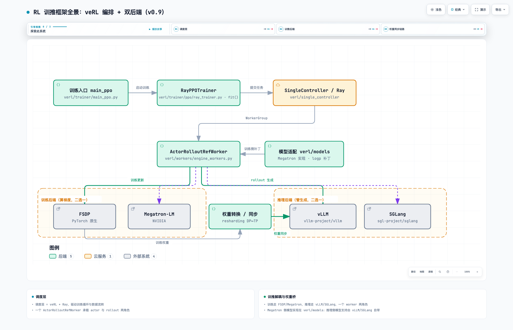
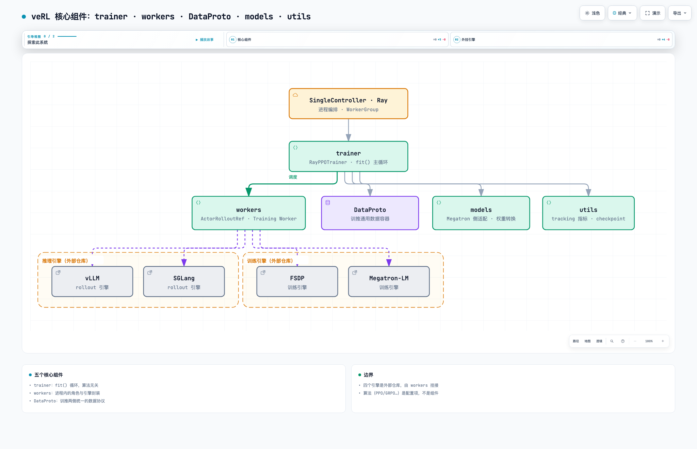
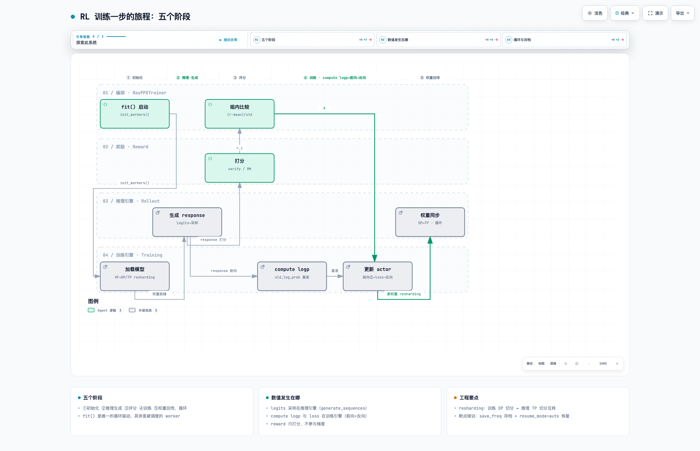

一、RL 世界观
💡：主流的RL框架有VERL/Slime/ROLL等，考虑通用，功能全，更新快等因素，选择VERL为例做说明，但VERL也有它的劣势：不够轻量化，二次开发难度高。
RL框架的作用是调度，算法与训推功能集成，是后训练和强化学习任务的入口，但是在真实项目场景，我们会遇到新模型适配，训推性能优化和新算法的开发适配前两项的工作重点就会落到训推后端（章节04），或者涉及框架与后端的联合开发，对能力要求更高。
1. RL 框架全景（以 veRL 为例）
RL（强化学习）：模型经过推理生成 response，reward manager 对 response 打分，训练拿到 response 和分数，计算策略更新量、更新权重，权重同步回推理引擎，进入新一轮训练
veRL 架构 RL 训练框架由一个调度层和训推两个引擎组成：
- 调度层（veRL + Ray）编排全流程：起 worker 进程、
DataProto传数据、调reward_manager打分、每步权重同步回推理引擎。RayPPOTrainer.fit()驱动训练循环（verl/trainer/ppo/ray_trainer.py）；ActorRolloutRefWorker（verl/workers/engine_workers.py）一个进程承载了 actor 与 rollout 两个角色。 - 推理引擎生成 response；生成时的采样概率不用于训练（原因见 1.1 第 1 步）。 vLLM：PagedAttention 分页 KV + continuous batching，通用吞吐与生态最广；SGLang：RadixAttention 前缀缓存，多轮/agent 场景吞吐强。
- 训练引擎对 (prompt, response) 前向算 logp 和 loss、反向按 loss 的梯度算出参数调整量；更新方向由 advantage 决定，幅度由梯度与学习率决定。 FSDP：PyTorch 原生，DP 切分，适合小参数量 dense；Megatron-LM：TP/PP/EP 全并行，大规模、长序列首选。

模型适配： - 推理侧（vLLM 或 SGLang）：模型支持自带（model registry），veRL 不改模型、只做权重同步； - 训练侧（FSDP 或 Megatron）： - 选 FSDP：直接用 HF transformers 实现，权重即 HF 格式，零适配； - 选 Megatron：Megatron-Core（mcore）有自己的权重格式——加载 HF 权重前先做 HF→mcore 转换（veRL 内置转换器加载时自动执行），verl/models 提供模型实现与 logp/MoE 补丁；保存下来的是 mcore 分片格式，给推理/评测/发布用需转回 HF。
权重同步（resharding）：训推之间的权重传输。训练侧与推理侧的权重切分布局不同——FSDP 按 DP 切分，Megatron 按 TP/PP/EP 切分，vLLM/SGLang 按 TP（MoE 可加 EP）切分。每步训练后，权重按推理引擎的切分布局重排，再写入推理引擎。
权重传输方案：
💡：权重传输方案的选择主要考虑传输速度和显存进行选择，常规拉任务选默认就好。
| 方案 | 做法 | veRL 支持度 | 好处 |
|---|---|---|---|
| disk（落盘→转换→加载） | 存档转格式后从磁盘加载 | ✅ 存档/换后端/发布路径（不进每步循环，慢） | 通用、可跨引擎 |
| broadcast | 训练组把参数 broadcast 到推理组（NCCL/gloo） | v0.x 经典分离方案；v0.9 新架构主线未见 | 实现简单、通用 |
| ZMQ+IPC 分桶直传 | 训推同机：分桶经 ZMQ+CUDA IPC/共享内存直传（bucketed_weight_transfer.py，桶大小 update_weights_bucket_megabytes） |
✅ v0.9 colocate 主线 | 不落盘、不经集合通信库，延迟低 |
| delta_sharded 增量 | 只传本步变化的分片，ZMQ/CUDA-IPC 到 vLLM checkpoint patch loader（WeightTransferEngine） | ✅ v0.9 | 通信量最小 |
| P2P 分片 resharding | 按推理侧目标分片点对点直传 | 部分分离部署方案 | 通信量比全量小 |
veRL 核心组件

交互版：rl-02-架构树.html
veRL 的五个核心组件（源码模块）：
- trainer：
verl/trainer/ppo——fit()训练循环，算法无关； - workers：
verl/workers——ActorRolloutRefWorker承载推理侧（rollout 生成）、TrainingWorker承载训练执行，并封装 reward_manager；其内的 WorkerGroup 把算法控制流从 Ray RPC、rank 切分和结果收集中解耦出来； - DataProto：
verl/protocol.py——训推两侧统一的数据容器，带分片/搬运语义（chunk、union、repeat），batch 在训推两侧的切分与传输都由它承担； - models：Megatron 侧适配与权重转换；
- utils：tracking 指标与 checkpoint。
VeRL 外接四个引擎（FSDP/Megatron/vLLM/SGLang），是外部仓库，由 workers 挂接。算法支持（PPO/GRPO/DAPO/GSPO 等），通过 adv_estimator 与 policy_loss 注册名、clip 范围 / KL 系数与位置 / 采样策略等配置灵活修改，不动训练循环。
1.1 RL 流程：五个阶段
一个训练 step 的五个阶段：① 初始化 → ② 推理·生成 → ③ 评分 → ④ 训练（compute logp → 前向 → 反向loss→优化器更新）→ ⑤ 权重更新回传，循环；各阶段属于哪个引擎见图 2 的阶段分区。

交互版：rl-03-rl流程.html
训练的数据是推理生成的 (prompt, response) + 分数。训练更新的核心机制是对比两次token概率：训练引擎先算基准概率 old_log_prob；更新阶段每遍前向再算当前概率 logp（第 5 步·前向②：更新中权重在变，每遍的 logp 都不同）。ratio = exp(logp − old_log_prob) 度量就就是当前策略偏离采样策略的幅度，loss 由 ratio 与 reward 共同构成。
💡梳理了下模型训练过程中每个参数的计算和更新过程，参数的含义要掌握！！！：
输入 state（= prompt）
↓
model(θ) → logits → probs → action（采样出 response 的每个 token）
↓
reward + critic(value) → advantage A（GRPO 无 critic，用组内均值）
↓
A + log_prob → loss（ratio = exp(logp − old_logp)，clip 限幅在 1±ε）
↓
loss.backward() → grad（A 的符号定方向；|A| 越大梯度越大）
↓
optimizer.step() → 更新 θ（θ ← θ − η·grad）
💡以下方法，从ray_trainer 进入到VERL的训推后端实现中即可看到
- 生成：推理引擎
generate_sequences()按 logits 采样出 response。 - VeRL里采样概率默认不用做 old_log_prob：vLLM 算子与训练引擎不同，同样权重的 logits 有数值差，策略未变但是 ratio 偏离了；
- 评分：
reward_manager（naive.py 的NaiveRewardManager）对每条 response 给一个分r_i：可验证任务（数学/代码）规则核对答案，开放任务 RM 打分。 - compute logp（前向①）：训练引擎对 (prompt, response) 前向，算出
old_log_prob（_compute_old_log_prob()）作为更新前的基准。 - ref 同步前向算
ref_log_prob（_compute_ref_log_prob()）供 KL；无 ref 配置（DAPO 去 KL，use_reference_policy=False）则跳过，loss 无 KL 项。 - 组内比较算Advantage：同一 prompt 的 G 条 response，优势Advantage
A_i = (r_i − mean) / std（compute_advantage()）。 - 比同组好 → A>0；差 → A<0；A 广播到该 response 所有 token；
- KL 位置为 reward（
kl_in_reward）时：先从 r_i 扣 KL（apply_kl_penalty）再算 A。 - 前向② + 反向：
update_actor()对同一批数据可重复ppo_epochs遍。 - 前向②：得当前 logp，
logpdiff = logp − old_log_prob（= log ratio），ratio = exp(logpdiff)； - loss = −min(ratio·A, clip(ratio, 1±ε)·A)（
compute_policy_loss()，core_algos.py）；use_kl_loss=True时 KL 加在此处； - 反向：按 loss 计算参数调整量，优化器更新权重。
- 保存与权重同步：
update_actor()后按save_freq条件存档（_save_checkpoint()），随后checkpoint_manager.update_weights()把新权重同步回推理引擎，进入下一步。
2. RL 训练指标学习
效果类
| 指标（veRL 日志名） | 含义 | 正常形态 | 异常与处理 |
|---|---|---|---|
critic/rewards/mean |
平均奖励，学习效果总览 | 初期低位，随后爬升 | 骤降 → 查 clip_ratio 与 entropy；跌至随机水平 → 怀疑权重同步失败 |
response_length/mean |
平均回答长度 | 随能力上升缓慢增长 | 突涨 = reward hacking（靠冗长刷分），检查评分规则 |
response_length/clip_ratio |
截断比例（触及 max_response_length） | < 5% | 偏高 → 回答没说完，或触发过长惩罚拉低 reward；放开长度 |
actor/entropy |
输出多样性 | 缓慢下降 | 持续快速下降 = 熵塌缩（回答趋同），学习将停滞；降采样温度或调 KL 系数 |
actor/kl_loss |
与 ref 的偏离 | 小幅非零 | 过大 = 跑偏；恒 0 = KL 约束没生效（配置错误） |
prompt_length/mean |
平均提示长度 | 与数据集分布一致 | 突变 = 数据管线问题 |
训练稳定性类
| 指标 | 含义 | 正常形态 | 异常与处理 |
|---|---|---|---|
actor/pg_loss |
策略损失 | 小幅波动 | 居高不下且 reward 不涨 = 更新无效，查 ratio 是否全程被裁剪 |
actor/grad_norm |
单步参数更新幅度 | 平稳 | 突然尖峰 = 学习率过大或奖励异常值 |
logpdiff（logp − old_log_prob） |
两个 logp 的差。 |
veRL 里两个 logp 都是训练侧前向算的，所以这个差只反映策略本身变了多少：第一遍 ≈ 0（正常基线在万分位，1e-4 噪声级），后续遍慢慢变大；第一遍就到 1e-2 以上 = 权重同步或数值路径出问题 | 有的框架直接用 rollout logprobs（推理引擎返回的概率）当基准，这时 logpdiff 比的是训推两个引擎的差异——反过来可以用它定位训推不一致问题 |
性能类
| 指标 | 含义 | 正常形态 | 异常与处理 |
|---|---|---|---|
timing/gen、timing/step |
推理 / 整步耗时 | 推理占 60–80% 正常 | 推理占比更高 → 推理是瓶颈，加 rollout 卡或调 batch（性能手段见第六章） |
常见排查：reward 下降 + 截断率上升 → 回答触及 max_response_length 触发截断/惩罚。放开长度后 reward 恢复即为此原因。
3. RL 训练调参
配置文件：verl/trainer/config/ppo_trainer.yaml
- batch 配比：
train_batch_size（prompt 数）×rollout.n（= G，组大小）= 一步生成的 response 条数；一步的真实规模由 token 数决定（条数 ×max_response_length），调吞吐看 token 不看条数。ppo_mini_batch_size常取 train_batch_size 的 1/2 ~ 1/4；ppo_micro_batch_size由显存反推，OOM 先减半。 - 模型切分：FSDP 后端按 DP 切（参数分片到卡，每卡过不同数据），长序列可加 SP（序列并行）；Megatron 后端配 TP / PP / EP / CP。
- 显存不够的手段（按需组合）：调整切分（TP/PP 分担单卡显存，需改并行布局）、减 batchsize（
ppo_micro_batch_size等）、offload（param_offload/optimizer_offload，参数/优化器状态用完卸回内存）、重计算（activation checkpointing，不存中间激活、用时重算）等。 - 序列长度：
max_prompt_length超长部分左截断（保留问题尾部）；max_response_length直接决定回答上限，长推理任务给不足会直接损失 reward。 - 推理显存预留：
gpu_memory_utilization是 vLLM 可用显存比例。colocate（训推同卡）常用 0.5–0.6 给训练侧留；分离部署可到 0.85+。 - 权重转换：训练存的是训练引擎格式（Megatron 分片），推理/评测/发布要 HF 格式，靠 checkpoint 转换器互转。换后端必须过这一步，否则精度静默错误。
- 断点续训：
save_freq每隔 N step 存档；resume_mode: auto从最近存档恢复，resume_from_path指定存档。不配置则中断后无法恢复。